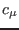
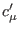
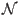
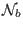

Next: The non-local, approximate weak-equilibrium Up: Fortran: Module Interface turbulence: Previous: Algebraic length-scale with two Contents
INTERFACE:
subroutine cmue_a(nlev)DESCRIPTION:
The solution of (70) and (71) has the shape indicated by (74). This subroutine is used to update the quantities ,  and , defined in (74), from which all turbulent fluxes can be computed. The non-linear terms  and  are updated by evaluating the right hand side of (65) at the old time step.
The numerators and the denominator appearing in (77) are polynomials of the form
The coefficients of  are given by
are given by
USES:
use turbulence, only: eps
use turbulence, only: P,B,Pb,epsb
use turbulence, only: an,as,at,r
use turbulence, only: cmue1,cmue2,gam
use turbulence, only: cm0
use turbulence, only: cc1
use turbulence, only: ct1,ctt
use turbulence, only: a1,a2,a3,a4,a5
use turbulence, only: at1,at2,at3,at4,at5
IMPLICIT NONE
INPUT PARAMETERS:
number of vertical layers
integer, intent(in) :: nlev
BUGS:
Test stage. Do not yet use.REVISION HISTORY:
Original author(s): Lars Umlauf
$Log: cmue_a.F90,v $
Revision 1.1 2005-06-27 10:54:33 kbk
new files needed
Karsten Bolding 2012-01-24